Arduino Opdrachten
Opdracht 3BBij opdracht 3B is het de bedoeling om twee lampjes tegelijk te laten knipperen. |
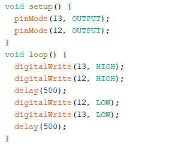 | |
Opdracht 4CHier was het de bedoeling om het ene lampje feller te laten branden terwijl het andere lampje aan het dimmen is. |
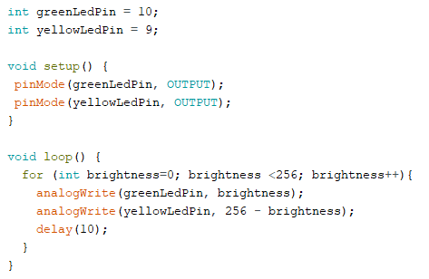 | |
Opdracht 6CBij opdracht 6c heb ik gemaakt dat de lampjes dimmen/feller worden als er gedraaid wordt. |
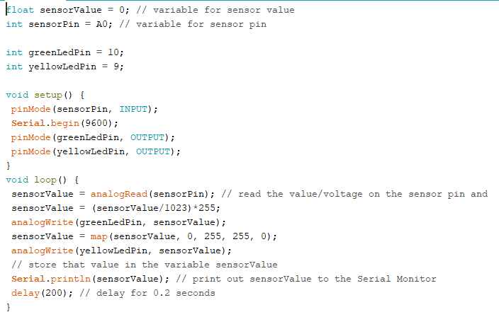 | |
Opdracht 7ABij opdracht 7A heb ik een smiley face geprojecteerd op het led board. |
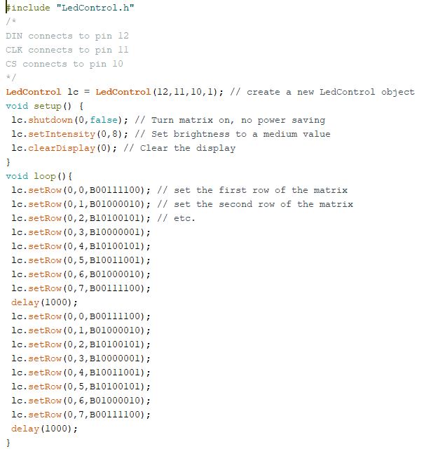 | |
Opdracht 8ABij opdracht 8A is het de bedoeling om de felheid van de lampen te bepalen met een lichtsensor. |
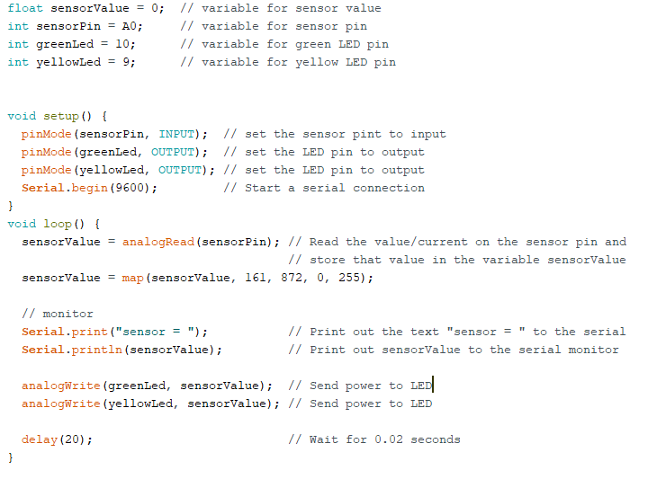 | |
Opdracht 9CBij opdracht 9C was de opdracht om een alarm te maken met de arduino speaker. |
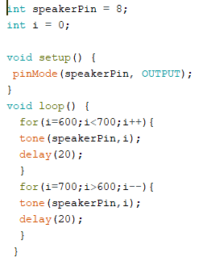 | |
Opdracht 11CBij opdracht 11c heb ik gewerkt met de distance sensor en een lampje. |
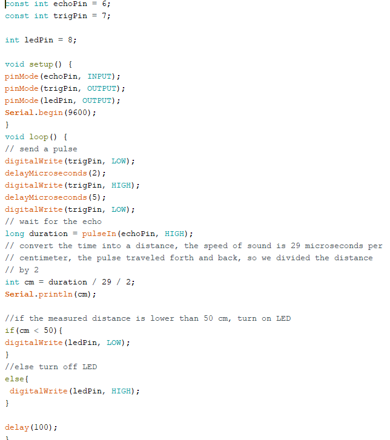 | |
Opdracht 12DOpdracht 12D is een combinatie van processing en arduino wwarbij de cirkel groter wordt als er aan de knop gedraait wordt. |
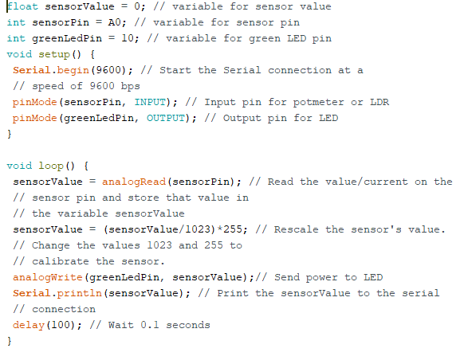
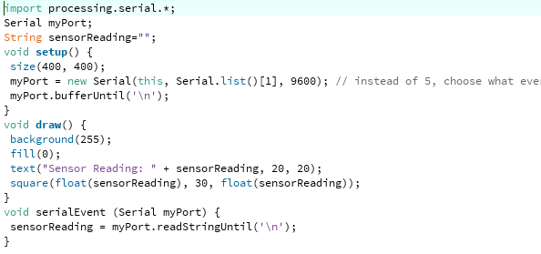 |
|
Opdracht 13BBij opdracht 13B moest ik zelf experimenteren met processing en arduino. |
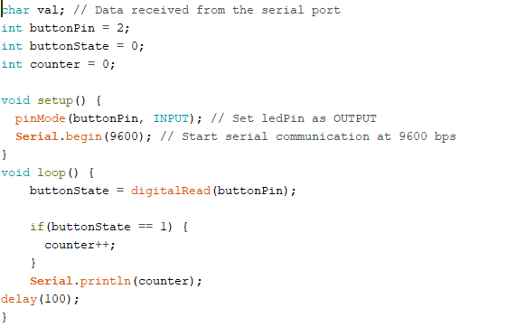
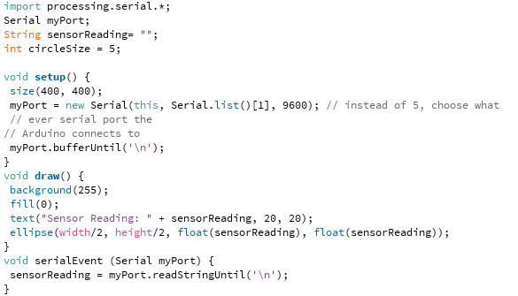 |
|
Opdracht 14BHierbij heb ik gewerkt met buttons en een lampje |
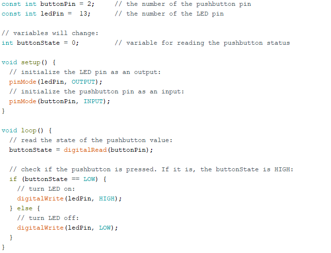 | |
Opdracht 15BBIj opdracht 15B heb ik met de servo motor geexperimenteerd en is hetvolgende eruit gekomen: |
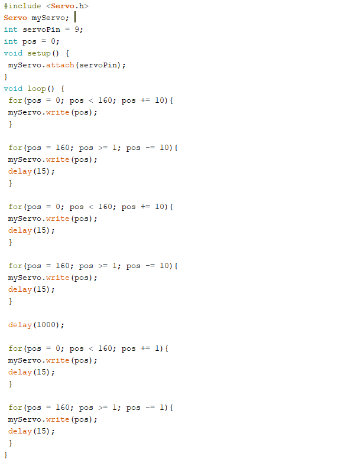 | |
Opdracht 16CBij opdracht 16C heb ik capacitive touch gebruikt met een stukje aluminium folie een een lampje. |
||